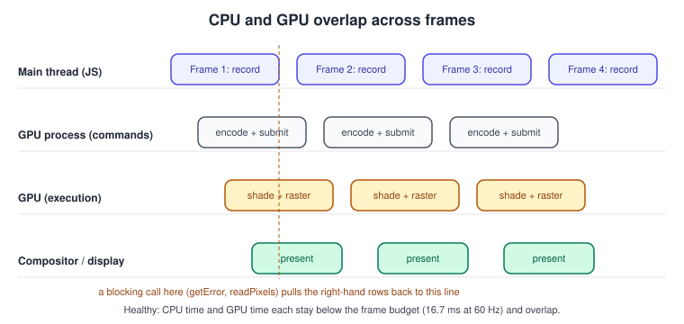
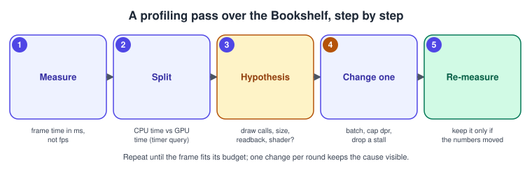
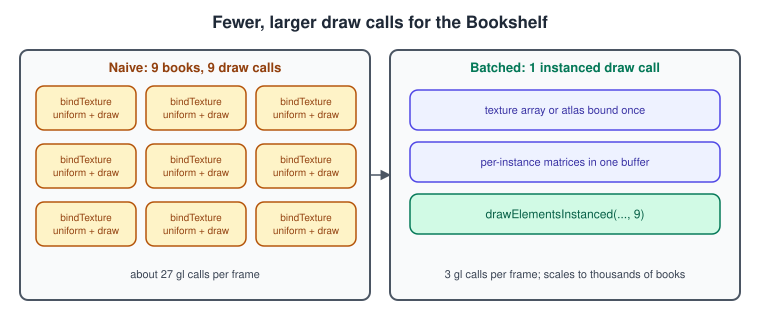
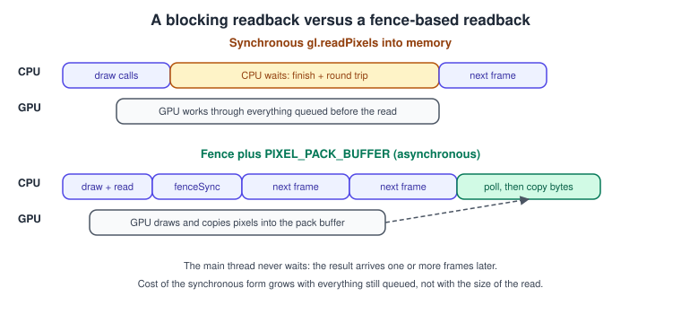
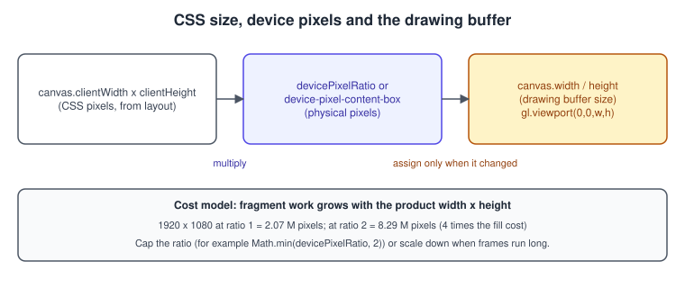

WebGL Performance and Debugging
|
This content was generated with the assistance of AI and should be verified against the official documentation before being relied on in production. |
Most WebGL performance problems are not about the speed of the GPU. They come from asking it to do too much work per pixel, from sending it too many small commands, from making the CPU wait for results that are not ready, and from doing expensive things at the wrong moment (compiling shaders in the middle of an animation, resizing a buffer every frame). Debugging has the matching difficulty that the API reports almost nothing by default: a failed call sets an error flag or silently draws nothing. This page gives a method for measuring first, a catalogue of the usual causes with the code that fixes them, and the tools for finding out what the GPU was really asked to do.
The facts were checked in November 2026. The APIs are WebGL 2.0 (editor’s draft dated 2026-06-30, based on OpenGL ES 3.0) with the MDN WebGL best-practices article, the extensions KHR_parallel_shader_compile,
EXT_disjoint_timer_query_webgl2, WEBGL_debug_shaders and WEBGL_lose_context, and three.js r187 (three@0.187.0) for the renderer.info part. WebGL 2 is supported in Chrome 56, Firefox 51, Safari 15 and Edge 79
or later (about 97 % of global usage on caniuse). The extensions below are not universal: each example feature-detects with getExtension and has a fallback. The listings run in any current browser from a local web
server; use the Bookshelf scene from the earlier pages (triangle, textured and lit book, instanced shelf, shadow pass, picking) as the thing being measured. The same ideas for desktop OpenGL are in
OpenGL Performance and Debugging and Tools; engine-independent background is in
Performance and Profiling and Game Loop and Frame Timing.
Where a frame’s time goes
A WebGL call does not draw anything by itself. The browser validates the call on the JavaScript thread, encodes it and sends it to a GPU process, which hands it to the driver (through ANGLE on many systems, see WebGL Versions and Browser Support); the GPU then executes it later, and the compositor finally shows the result. Three stages overlap in time:
-
CPU time: your JavaScript plus the cost of recording commands. It grows with the number of calls and the amount of data uploaded.
-
GPU time: shading and rasterising, grows with the number of pixels, the cost of each fragment and the amount of geometry and memory bandwidth.
-
Presentation: the browser composites the canvas with the page, and the display refreshes at a fixed rate (60 Hz gives 16.7 ms per frame, 120 Hz gives 8.3 ms).

When the pipeline is healthy, frame N+1 is recorded on the CPU while frame N is still running on the GPU, so the slower of the two sets the frame rate. A blocking call (a call that needs a result from the
GPU) breaks the overlap: the CPU must wait until the GPU has finished everything queued before it, and from then on the two sides take turns instead of working at the same time. That is why a single
gl.getError() or gl.readPixels() per frame can halve the frame rate.
Measure before changing anything
Guessing is the commonest mistake. The cheapest measurement is the time between requestAnimationFrame callbacks, measured in milliseconds rather than "fps", because milliseconds add up and fps does not.
// Frame-time meter: rolling average and worst frame of the last 120 frames.
const samples = new Float32Array(120);
let n = 0, last = performance.now();
function frame(now) {
samples[n++ % samples.length] = now - last;
last = now;
if (n % 60 === 0) {
const count = Math.min(n, samples.length);
let sum = 0, worst = 0;
for (let i = 0; i < count; i++) { sum += samples[i]; worst = Math.max(worst, samples[i]); }
console.log(`avg ${(sum / count).toFixed(1)} ms, worst ${worst.toFixed(1)} ms`);
}
// ... update and draw ...
requestAnimationFrame(frame);
}
requestAnimationFrame(frame);The browser aligns requestAnimationFrame to the display refresh, so a frame time that sits at exactly 16.7, 33.3 or 50 ms means the page is missing refresh intervals; a value below that means there is slack.
This number does not say whether the CPU or the GPU is the limit. Two quick experiments do: shrink the canvas (set the drawing buffer to a quarter of the pixels); if frame time drops a lot, the GPU fill rate was the
limit. Skip the draw calls but keep the scene logic; if frame time barely changes, the CPU is not in the draw path.

GPU time with timer queries
EXT_disjoint_timer_query_webgl2 measures how many nanoseconds the GPU spent on a block of commands without stalling the CPU. It is an extension with limited availability: it is not Baseline and some browsers do not
expose it (and browsers may reduce its precision for security reasons), so always test for it and treat it as a development aid.
const gl = canvas.getContext('webgl2');
const timer = gl.getExtension('EXT_disjoint_timer_query_webgl2'); // null where unsupported
const pending = []; // queries issued but not yet read
function beginGpuTimer() {
if (!timer) return null;
const q = gl.createQuery();
gl.beginQuery(timer.TIME_ELAPSED_EXT, q);
return q;
}
function endGpuTimer(q) {
if (!q) return;
gl.endQuery(timer.TIME_ELAPSED_EXT);
pending.push(q);
}
// Call once per frame: reads results that are ready, never blocks.
function collectGpuTimes(report) {
if (!timer) return;
const disjoint = gl.getParameter(timer.GPU_DISJOINT_EXT); // true if clocks changed: discard results
while (pending.length) {
const q = pending[0];
if (!gl.getQueryParameter(q, gl.QUERY_RESULT_AVAILABLE)) break; // not ready: try next frame
pending.shift();
if (!disjoint) report(gl.getQueryParameter(q, gl.QUERY_RESULT) / 1e6); // nanoseconds to milliseconds
gl.deleteQuery(q);
}
}
// Usage inside the render loop:
const q = beginGpuTimer();
drawShelfAndBooks();
endGpuTimer(q);
collectGpuTimes((ms) => console.log(`GPU: ${ms.toFixed(2)} ms`));Only one TIME_ELAPSED_EXT query can be active at a time, results arrive a few frames later, and a result is meaningful only when GPU_DISJOINT_EXT was false. Stop timing a block as soon as it ends and never read a
result in the same frame that issued it: that is exactly the blocking behaviour you are trying to avoid. The WebGL 1 variant is EXT_disjoint_timer_query, whose query functions are methods of the extension object (createQueryEXT, beginQueryEXT and so on) instead of the context; see the MDN page of the same name.
CPU side: fewer, cheaper commands
Draw calls and state changes
Each drawArrays or drawElements call has a fixed cost on the CPU (validation, state tracking, command encoding), and every state change before it (program, texture, uniform, buffer, blend mode) adds more. The
guidance is to submit fewer, larger draws and to sort by state.

Techniques, roughly in order of payoff:
-
Instancing:
drawElementsInstancedwith per-instance attributes (vertexAttribDivisor) draws thousands of copies of the book mesh in one call; see WebGL 2 Advanced Features. -
Merging static geometry: books that never move relative to the shelf can share one vertex buffer.
-
Texture atlases or array textures (
TEXTURE_2D_ARRAY) so that many objects share one texture binding. -
Sorting by program, then texture, then geometry, and drawing opaque objects front to back to benefit from early depth rejection.
-
Skipping redundant state: remember the currently bound program, texture and VAO in JavaScript and skip a call that would set the same value.
-
Multi-draw: the
WEBGL_multi_drawextension issues many ranges in one call where available. -
Vertex array objects so that attribute setup is one
bindVertexArraycall instead of manyvertexAttribPointercalls.
// A tiny state cache: skip calls that would not change anything.
class GlState {
constructor(gl) { this.gl = gl; this.program = null; this.vao = null; this.tex = new Map(); }
useProgram(p) { if (this.program !== p) { this.gl.useProgram(p); this.program = p; } }
bindVao(v) { if (this.vao !== v) { this.gl.bindVertexArray(v); this.vao = v; } }
bindTexture(unit, t) {
if (this.tex.get(unit) === t) return;
this.gl.activeTexture(this.gl.TEXTURE0 + unit);
this.gl.bindTexture(this.gl.TEXTURE_2D, t);
this.tex.set(unit, t);
}
}Source: MDN: WebGL best practices
A cache like this is only correct if every piece of code goes through it (a library that binds things behind your back invalidates the cache). three.js has its own state tracking, so do not mix raw gl calls into a
three.js scene without resetting its state (renderer.resetState()).
Per-frame allocation and uploads
-
Reuse typed arrays and matrices instead of creating new ones every frame; garbage collection pauses show up as irregular spikes in the frame-time meter.
-
Update changing buffers with
bufferSubDataon a buffer created withDYNAMIC_DRAWorSTREAM_DRAW; allocate once withbufferData(target, byteSize, usage)and fill later. The usage hint is advisory. -
Group uniforms that change together in a uniform buffer object (std140) so one
bufferSubDataupdates them; see Buffers, Attributes, Uniforms and VAOs. -
Keep the number of attributes and varyings low: the guaranteed minimums are small (for example 16 vertex attributes and 8 varying vectors in the list MDN gives), so never assume your development GPU’s limits exist elsewhere.
Blocking calls and the pipeline stall
The browser runs the GPU commands asynchronously. A call that returns data from the GPU forces the browser to flush the queue and wait for a round trip. MDN’s best-practices article lists the usual offenders:
| Call | Why it blocks and what to do |
|---|---|
|
Forces a flush and a round trip. Use it only in a debug build or through a wrapper (below); never in the release loop. |
|
Stall if called before compilation has finished. Use |
|
May flush and round trip. Query once at start-up and cache the result (limits, extension objects, attribute locations). |
|
Waits until the GPU has finished all previous work. Use a |
|
Causes a finish and a round trip when called directly after drawing. Wait for a fence first. |

Asynchronous readback
Colour-ID picking (the Bookshelf’s click-to-select, see the picking step of the running example) needs one pixel back from the GPU. Doing readPixels into a typed array in the click handler stalls. In WebGL 2 you can
read into a pixel pack buffer, insert a fence, and copy the bytes only once the fence has signalled.
// Poll a fence without blocking: resolves when the GPU has passed it.
function clientWaitAsync(gl, sync, flags, intervalMs) {
return new Promise((resolve, reject) => {
(function check() {
const res = gl.clientWaitSync(sync, flags, 0); // timeout 0: never blocks
if (res === gl.WAIT_FAILED) { reject(new Error('clientWaitSync failed')); return; }
if (res === gl.TIMEOUT_EXPIRED) { setTimeout(check, intervalMs); return; }
resolve(); // ALREADY_SIGNALED or CONDITION_SATISFIED
})();
});
}
async function readPixelAsync(gl, x, y, out /* Uint8Array(4) */) {
const pbo = gl.createBuffer();
gl.bindBuffer(gl.PIXEL_PACK_BUFFER, pbo);
gl.bufferData(gl.PIXEL_PACK_BUFFER, 4, gl.STREAM_READ);
gl.readPixels(x, y, 1, 1, gl.RGBA, gl.UNSIGNED_BYTE, 0); // offset 0 into the bound pack buffer: asynchronous
gl.bindBuffer(gl.PIXEL_PACK_BUFFER, null);
const sync = gl.fenceSync(gl.SYNC_GPU_COMMANDS_COMPLETE, 0);
gl.flush(); // make sure the fence reaches the GPU
try {
await clientWaitAsync(gl, sync, 0, 4);
} finally {
gl.deleteSync(sync);
}
gl.bindBuffer(gl.PIXEL_PACK_BUFFER, pbo);
gl.getBufferSubData(gl.PIXEL_PACK_BUFFER, 0, out); // data is ready: no stall
gl.bindBuffer(gl.PIXEL_PACK_BUFFER, null);
gl.deleteBuffer(pbo);
return out;
}
// Click handler of the picking pass: the id comes back a frame or two later.
canvas.addEventListener('pointerdown', async (e) => {
renderIdPass(); // draws books with flat id colours into the FBO
const px = new Uint8Array(4);
const r = canvas.getBoundingClientRect();
const x = Math.floor((e.clientX - r.left) * canvas.width / r.width);
const y = canvas.height - 1 - Math.floor((e.clientY - r.top) * canvas.height / r.height);
await readPixelAsync(gl, x, y, px);
const bookId = px[0] + (px[1] << 8) + (px[2] << 16);
console.log('picked book', bookId);
});Source: MDN: WebGL best practices
Pitfalls: the y flip (WebGL’s origin is bottom left, the DOM’s top left), reading from the framebuffer that was bound when readPixels ran (bind the ID framebuffer first, or read from the default framebuffer), and reusing one buffer for several
overlapping reads. For many reads per frame, keep a small ring of pack buffers.
Shader compilation without a hitch
Compiling and linking a program can take tens or hundreds of milliseconds, and calling getProgramParameter(program, LINK_STATUS) right after linkProgram blocks until the link is done. With
KHR_parallel_shader_compile the browser may compile on other threads and you poll COMPLETION_STATUS_KHR instead. Start every compile and link first, then check them later.
const parallel = gl.getExtension('KHR_parallel_shader_compile'); // null where unsupported
function startProgram(vsSource, fsSource) {
const vs = gl.createShader(gl.VERTEX_SHADER); gl.shaderSource(vs, vsSource); gl.compileShader(vs);
const fs = gl.createShader(gl.FRAGMENT_SHADER); gl.shaderSource(fs, fsSource); gl.compileShader(fs);
const p = gl.createProgram();
gl.attachShader(p, vs); gl.attachShader(p, fs);
gl.linkProgram(p);
return { p, vs, fs };
}
function whenReady(entry) { // resolves once linking has finished
return new Promise((resolve, reject) => {
(function poll() {
const done = parallel ? gl.getProgramParameter(entry.p, parallel.COMPLETION_STATUS_KHR) : true;
if (!done) { requestAnimationFrame(poll); return; }
if (!gl.getProgramParameter(entry.p, gl.LINK_STATUS)) {
reject(new Error(gl.getProgramInfoLog(entry.p) || gl.getShaderInfoLog(entry.vs) || gl.getShaderInfoLog(entry.fs)));
} else resolve(entry.p);
})();
});
}
// Start all programs together, then wait for all of them while a loading screen animates.
const entries = [startProgram(bookVS, bookFS), startProgram(shadowVS, shadowFS), startProgram(idVS, idFS)];
const programs = await Promise.all(entries.map(whenReady));Source: MDN: KHR_parallel_shader_compile
Without the extension the code still works, but the first poll blocks like before. Two related habits: do not check the compile status of the shaders unless linking failed (the program info log usually has what
you need), and draw each new program once behind the loading screen so the driver finishes any deferred work before the player sees it. In three.js the equivalent is renderer.compileAsync(scene, camera) (see
Performance and Disposal).
Canvas size, devicePixelRatio and ResizeObserver
Fragment work is proportional to the number of pixels in the drawing buffer. The drawing buffer is controlled by canvas.width and canvas.height; the displayed size is controlled by CSS. On a screen with a
devicePixelRatio of 2, one CSS pixel is four device pixels, so drawing at the full device resolution costs four times the fill rate.

Resize correctly, in this order: observe the element, compute the size in device pixels, and apply it in the render loop (not in the callback), because assigning canvas.width or canvas.height clears the drawing buffer and reallocates
it.
const canvas = document.querySelector('canvas');
let wantW = canvas.width, wantH = canvas.height;
const maxRatio = 2; // cap the cost on very dense screens
const observer = new ResizeObserver(([entry]) => {
const box = entry.devicePixelContentBoxSize?.[0];
if (box) { wantW = box.inlineSize; wantH = box.blockSize; } // exact device pixels
else {
const r = Math.min(window.devicePixelRatio || 1, maxRatio);
wantW = Math.round(entry.contentRect.width * r);
wantH = Math.round(entry.contentRect.height * r);
}
});
try { observer.observe(canvas, { box: 'device-pixel-content-box' }); }
catch { observer.observe(canvas, { box: 'content-box' }); } // approximate fallback
// The ratio can change without a resize (window moved to another screen, browser zoom):
matchMedia(`(resolution: ${window.devicePixelRatio}dppx)`).addEventListener('change', () => {
const r = Math.min(window.devicePixelRatio || 1, maxRatio);
wantW = Math.round(canvas.clientWidth * r); wantH = Math.round(canvas.clientHeight * r);
}, { once: true }); // re-register after it fires in real code
function frame() {
if (canvas.width !== wantW || canvas.height !== wantH) {
canvas.width = wantW; canvas.height = wantH;
}
gl.viewport(0, 0, gl.drawingBufferWidth, gl.drawingBufferHeight); // use the real buffer size
// ... draw ...
requestAnimationFrame(frame);
}
requestAnimationFrame(frame);Source: MDN: WebGL best practices
Use gl.drawingBufferWidth and gl.drawingBufferHeight rather than the canvas attributes when setting the viewport: the browser may allocate a smaller buffer than requested if the size exceeds the implementation limit. A dynamic-resolution strategy
(lower the ratio when frames run long, raise it when there is slack) is a cheap way to keep a stable frame rate. The worker version of the same logic is in
OffscreenCanvas and Workers.
GPU side: pixels, memory and bandwidth
| Cause | Fix |
|---|---|
Too many pixels |
Cap |
Overdraw (many layers of transparent or hidden surfaces) |
Draw opaque objects front to back, use depth testing and face culling ( |
Expensive fragment shaders |
Move work to the vertex stage or to a texture lookup, use |
Large textures |
Use mipmaps, compressed formats (see Extensions) and the smallest size that looks right. Mipmaps add roughly one third to the memory of a texture. |
Storage reallocation |
Use |
Multisampled or depth attachments you do not need after a pass |
Call |
Float render targets |
|
The VRAM budget
There is no WebGL call that tells you how much video memory exists or is free, so you estimate. A texture costs about \( width \times height \times bytesPerPixel \) (times \( 4/3 \) with mipmaps), and an 8-bit RGBA
4096 by 4096 texture is therefore 64 MiB, or about 85 MiB with mipmaps. Render targets and the default framebuffer (colour, depth and possibly multisample buffers at the full device resolution) can easily be the largest users on
a high-density phone. Typical mistakes: loading photographs at camera size, forgetting to call deleteTexture on unused textures, and creating a new framebuffer on every resize without deleting the old one. When the budget is exceeded the
browser may evict resources or lose the context; see Context Loss and Robustness.
Context attributes that affect speed
| Attribute | Effect |
|---|---|
|
Prefer |
|
Default |
|
Keeps the content after presentation, which prevents some optimisations. Leave it |
|
|
|
Makes |
|
Lets the browser bypass part of the compositing path to reduce latency on supporting platforms; it can cause tearing. |
Debugging
Errors: check in development, not in production
WebGL records the first error in an internal flag that getError() returns and clears; it also prints warnings to the browser console, which is usually the first place to look. Because getError() blocks, wrap the context so that
the check happens only in a debug build, after every call, with the name of the function that failed.
const DEBUG = new URLSearchParams(location.search).has('gldebug');
function wrapForDebug(gl) {
if (!DEBUG) return gl;
return new Proxy(gl, {
get(target, prop) {
const value = target[prop];
if (typeof value !== 'function') return value;
if (prop === 'getError') return value.bind(target);
return (...args) => {
const result = value.apply(target, args);
const err = target.getError();
if (err !== target.NO_ERROR) {
const code = Object.keys(Object.getPrototypeOf(target)).find((k) => target[k] === err) || err;
console.error(`gl.${String(prop)} raised ${code}`, args);
debugger; // break in the devtools at the faulty call
}
return result;
};
},
});
}
const gl = wrapForDebug(canvas.getContext('webgl2'));The proxy is a simple example (one getError per call is slow by design); small helper libraries exist for this job too.
Use the proxy only during development. Load it conditionally, as the query-string switch does, so the production code path is the plain context.
Shaders: logs and translated source
Always read the info log when compilation or linking fails. Two details save time: the WebGL log lines refer to the translated source line numbers, and the WEBGL_debug_shaders extension exposes the translated shader through
getTranslatedShaderSource(shader). Some browsers restrict that extension for privacy reasons; treat it as optional. Putting a #line directive at the top of your shader strings, or generating them from files in a bundler, keeps line numbers
meaningful.
function compileChecked(gl, type, source) {
const s = gl.createShader(type);
gl.shaderSource(s, source);
gl.compileShader(s);
if (!gl.getShaderParameter(s, gl.COMPILE_STATUS)) {
const log = gl.getShaderInfoLog(s);
const dbg = gl.getExtension('WEBGL_debug_shaders');
const translated = dbg ? dbg.getTranslatedShaderSource(s) : '(WEBGL_debug_shaders not available)';
console.error(`Shader compile failed:\n${log}\n--- translated source ---\n${translated}`);
gl.deleteShader(s);
throw new Error('Shader compile failed');
}
return s;
}Source: MDN: WEBGL_debug_shaders
Frame capture and browser tools
WebGL has no standard debug-layer API like Vulkan’s validation layers, so debugging relies on tools that record the stream of gl.* calls and let you replay and inspect it.
-
Spector.js (a community project, named here as an ecosystem tool) records one frame of calls and shows each draw with its state, textures, programs and uniforms; it is the first tool to try for "why is nothing drawn".
-
Browser developer tools: the Performance panel shows main-thread JavaScript time, long tasks and frames; the console shows WebGL warnings and context-loss messages. Browser-internal pages such as
chrome://gpulist the GPU, driver and which WebGL features are enabled, and the Firefox and Safari developer tools offer their own canvas and graphics inspection panels (names and features change between versions, so check the version you use). -
Native frame debuggers: the desktop workflow with RenderDoc and similar tools is described in Debugging and Tools; for WebGL, frame-capture libraries that wrap the context are the usual route.
-
Context-loss simulation:
WEBGL_lose_context.loseContext()andrestoreContext()let you test recovery on demand; see Context Loss and Robustness. -
Reduced test cases: when a bug depends on a driver,
WEBGL_debug_renderer_info(where exposed) reports the unmasked vendor and renderer strings so that bug reports can say which GPU is involved. It is restricted for privacy reasons, see Security, CORS and Privacy.
Typical causes of an empty or black result, in the order they occur in practice: a texture that is incomplete (non-power-of-two in WebGL 1 without clamping and non-mipmap filter, or missing mip levels in WebGL 2); the wrong
activeTexture unit or an unset sampler uniform; gl.viewport not updated after a resize; face culling with the wrong winding; the depth range clipped by near and far planes; and
a matrix uploaded without transposing (uniformMatrix4fv requires transpose = false in WebGL, so data must be column major already).
three.js diagnostics
For three.js scenes, renderer.info collects counters: renderer.info.render has calls, triangles, points and lines for the last frame, and renderer.info.memory has the number of live geometries and textures.
Print them in the frame-time meter and watch the memory numbers: if they grow over time, resources are not being disposed (see
Performance and Disposal).
import * as THREE from 'three';
const renderer = new THREE.WebGLRenderer({ antialias: true });
renderer.setAnimationLoop(() => {
renderer.render(scene, camera);
const { render, memory } = renderer.info;
hud.textContent = `${render.calls} calls, ${render.triangles} triangles, ` +
`${memory.geometries} geometries, ${memory.textures} textures`;
});The numbers are per render() call, and with passes such as shadows or post-processing the counter resets automatically at each call unless you set renderer.info.autoReset = false and reset it yourself. Typical three.js
remedies for a high call count are InstancedMesh, BatchedMesh, merged geometry and fewer materials; the GPU-side ones are the same as above. See
Getting Started with three.js for the renderer set-up.
A ten item checklist
-
Measure frame time in milliseconds and find out whether the CPU or GPU limits it.
-
Cap
devicePixelRatio(for example at 2) and resize only when the size changed. -
Batch with instancing, atlases or array textures; sort by state and skip redundant calls.
-
Remove
getError,readPixels(to the CPU),getParameterand status queries from the frame loop. -
Read pixels or buffers asynchronously with a pack buffer and a fence.
-
Compile and link all shaders up front, in parallel with
KHR_parallel_shader_compile, and warm them up behind a loading screen. -
Allocate textures with
texStorage2D, use mipmaps and compressed formats, delete what you no longer use. -
Avoid reallocating buffers and framebuffers every frame; reuse typed arrays.
-
Invalidate attachments you do not need after a pass; keep
preserveDrawingBufferoff. -
Test on a mid-range phone and on a machine with software rendering, and test context loss.
Where older guides are outdated
The three books pre-date almost everything on this page. Their performance advice is mostly "use fewer objects" and "merge geometry", which still holds, but the API surface is different.
| Older guide | Today | Version or date |
|---|---|---|
PAR ch. 7 and TCB ch. 1: debugging by |
|
Detector.js replaced by the |
PAR, LTJ and TCB: |
Unprefixed |
Prefixes are not needed in current browsers |
LTJ and TCB: |
|
|
PAR ch. 5, TCB ch. 1 and 3: |
|
WebGL 2 sync objects and pixel pack buffers |
All books: single WebGL 1 context, no timer queries, hand-compiled shaders |
|
WebGL 2 in all evergreen browsers (Safari 15) |
LTJ and TCB: |
Colour-management defaults and physical light units; different costs for shadow and post-processing passes |
Defaults since r152, |
More corrections are collected in What Changed Since Older Guides.
References
-
MDN: WebGL best practices https://developer.mozilla.org/en-US/docs/Web/API/WebGL_API/WebGL_best_practices
-
MDN: WebGL API https://developer.mozilla.org/en-US/docs/Web/API/WebGL_API
-
MDN: KHR_parallel_shader_compile https://developer.mozilla.org/en-US/docs/Web/API/KHR_parallel_shader_compile
-
MDN: EXT_disjoint_timer_query https://developer.mozilla.org/en-US/docs/Web/API/EXT_disjoint_timer_query
-
MDN: WEBGL_debug_shaders https://developer.mozilla.org/en-US/docs/Web/API/WEBGL_debug_shaders
-
MDN: WebGLRenderingContext.getError() https://developer.mozilla.org/en-US/docs/Web/API/WebGLRenderingContext/getError
-
MDN: HTMLCanvasElement.getContext() https://developer.mozilla.org/en-US/docs/Web/API/HTMLCanvasElement/getContext
-
MDN: Window.requestAnimationFrame() https://developer.mozilla.org/en-US/docs/Web/API/Window/requestAnimationFrame
-
Khronos: WebGL extension registry https://registry.khronos.org/webgl/extensions/
-
Khronos: EXT_disjoint_timer_query_webgl2 https://registry.khronos.org/webgl/extensions/EXT_disjoint_timer_query_webgl2/
-
Khronos: WebGL 2.0 specification https://registry.khronos.org/webgl/specs/latest/2.0/
-
three.js docs: WebGLRenderer.info https://threejs.org/docs/#api/en/renderers/WebGLRenderer.info
-
three.js: Migration Guide https://github.com/mrdoob/three.js/wiki/Migration-Guide
-
Can I use: WebGL 2 https://caniuse.com/webgl2
-
Tony Parisi, WebGL: Up and Running (O’Reilly, 2012) https://www.oreilly.com/library/view/webgl-up-and/9781449326487/
-
Jos Dirksen, Learning Three.js, 2nd edition (Packt, 2015) https://www.packtpub.com/en-us/product/learning-threejs-the-javascript-3d-library-for-webgl-second-edition-9781784392215
-
Jos Dirksen, Three.js Cookbook (Packt, 2015) https://www.packtpub.com/product/threejs-cookbook/9781783981182